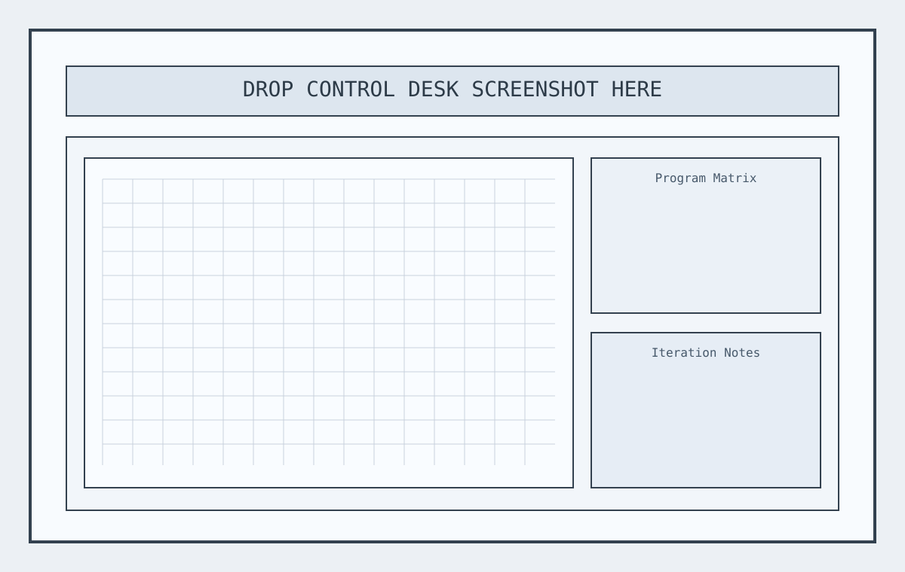

Start directly on the map, using real parcel and surrounding building context.
Primary user
Architecture Teams
Mapbox Building Generator is a map-native design tool for architects and urban design teams. It turns a clicked parcel or uploaded footprint into a parameterized building with editable massing, facade systems, interior stairs, and floorplan logic, then exports clean geometry for GIS workflows.
The interface is intentionally strict: hard linework, explicit controls, and deterministic geometry. The payoff is faster option generation with fewer ambiguous handoffs between concept design, internal review, and GIS analysis.
Start directly on the map, using real parcel and surrounding building context.
Edit floors, tapering, facade texture, exoskeleton, interior structure, and room logic.
Generate stairs, corridors, and room partitions that align with floorplate geometry.
Switch to floorplan mode for typical-floor inspection at zero pitch.

landing/assets/control-product-thumb.svg with your latest product capture.A deterministic workflow designed for architectural teams that need speed without losing control.
Next capabilities focus on reducing tool switching across the early design stack.
Direct mesh export for rapid import into DCC and real-time visualization pipelines.
Side-by-side building comparisons with synchronized controls and key metrics.
Generate coordinated building sets across districts for urban scenario exploration.
Integrated park typologies and public realm layers adjacent to generated buildings.
Practical payoff: go from empty parcel to defensible concept quickly, with enough geometric and program detail to support design reviews, alternatives, and GIS handoff.
Need the full concept gallery? Open the landing index and design thesis notes.